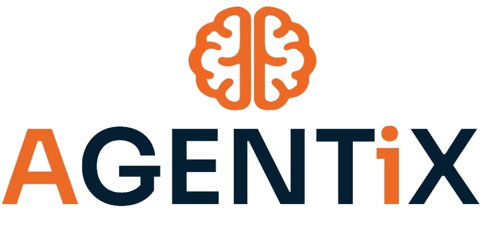

Scattered Leads
WhatsApp, ads, calls, inboxes — nothing works as one system.

Book a CallEnterprise AI Transformation Partner · India
We study your workflow, find what's broken, build the technology,
and deploy AI agents as a new execution layer.
How it works
Live architecture map
Problem → System → OptimizationProblem first
Before we talk about AI, we understand the business problem.
WhatsApp, ads, calls, inboxes — nothing works as one system.
Hot leads go cold because follow-up depends on manual effort.
Teams spend hours on updates instead of acting on insight.
People copy data between platforms every single day.
No repeatable content engine means inconsistent output.
Founders can't see real-time performance across the business.
We don't ask "Which AI tool?" — We ask "Where is the business leaking time, money, and leads?"
What AGENTiX does
Audit your process, tools, team workflow, and business goals.
Architecture for automation, SaaS, dashboards, AI agents, and CRM.
Build software, connect APIs, automate actions, deploy the AI layer.
Monitor, fix, improve, and scale the system as you grow.
The method
Goals, bottlenecks, budget, tools.
What slows sales, ops, or growth.
SaaS, agents, APIs, dashboards.
Frontend, backend, DB, AI flows.
WhatsApp, CRM, email, payments.
Test, train the team, go live.
Monitor and improve continuously.
Industry-agnostic
Patient inquiries, appointments, hospital sales, ecosystem automation.
Founder trust, LinkedIn automation, brand content, compliant workflows.
Lead conversion, member follow-up, digital marketing, website systems.
Product shoots, CRM, sales automation, and content engines.
AI video, storyboards, branded edits, campaign content.
CRM, ERP, LMS, inventory, payroll, dashboards, internal SaaS.
360° architecture
Voice, WhatsApp, SMS, AI calling, lead qualification, booking.
Sub-300ms latency agents for sales and customer support.
Voice cloning, video cloning, LinkedIn, reels, scripts.
Product shoots, model photos, b-roll, campaign edits.
Scraping, scoring, nurturing, multi-channel follow-ups.
Dashboards, portals, admin panels, analytics, APIs.
Centralized ops for teams, customers, inventory, sales.
Invoicing, payroll, approvals, expense tracking.
Live visibility into sales, ops, marketing, and growth.
Client work
Fintech
Problem: Needed founder-led trust.
Output: Voice/video cloning + LinkedIn workflows.
Hospital
Problem: Manual inquiry handling.
Output: AI sales workflow + response automation.
Healthcare
Problem: Sales + operational bottlenecks.
Output: Connected AI architecture.
Fitness
Problem: Weak lead handling.
Output: AI agents, content engine, campaigns.
Healthcare
Problem: Manual patient handling.
Output: Patient workflows, content, marketing.
D2C / Retail
Problem: Disconnected management.
Output: CRM, content, AI sales agents.
Custom pricing
Every bottleneck requires a different architecture.
Software complexity, dashboard, CRM, SaaS, AI agent, or content engine.
AI models, voice, messaging, hosting, databases, integrations.
Monitoring, support, improvements, scaling, workflow optimization.
Why AGENTiX
Bring us one bottleneck
We'll study the problem, map the workflow, and show you the AI-powered system that removes it.
Problem first. AI second. Execution always.
Book a Discovery Call →